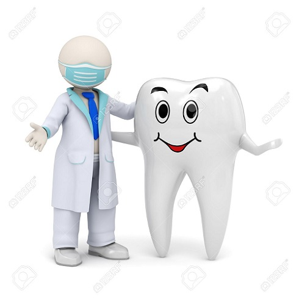
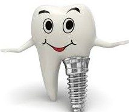
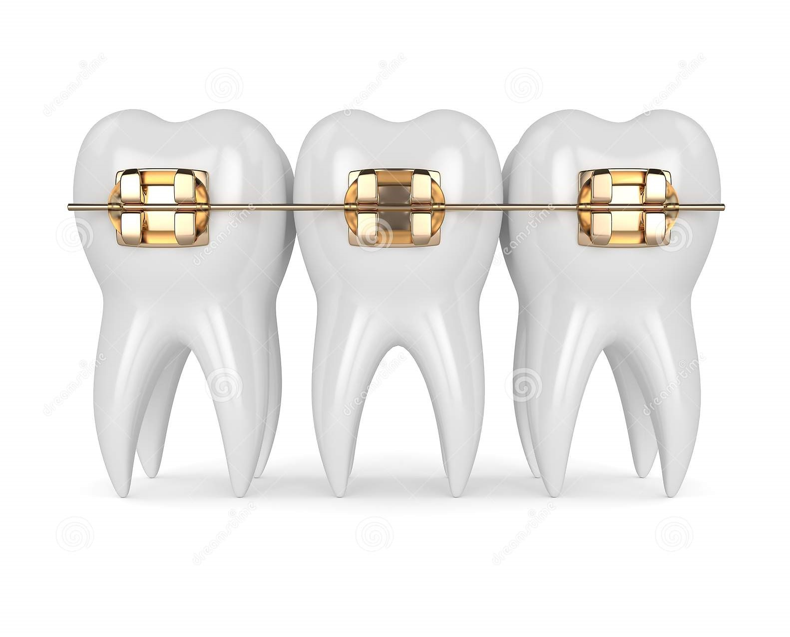

Teeth Decay Fillup
Dental fillings are a common way to treat cavities, which are areas of decaying tooth that become
small holes. During a filling, your dentist fills these holes with a substance, such as amalgam or
composite. While this is a simple, routine procedure, it leaves many people with sensitive teeth
afterward.... The stages of tooth decay are Initial demineralization,
Enamel decay, Dentin decay, Pulp damage, Abscess formation and finally Tooth Loss.

Dental Implant
A dental implant (also known as an endosseous implant or fixture) is a surgical component that interfaces with the bone of the jaw or skull to support a dental prosthesis such as a crown, bridge, denture, facial prosthesis or to act as an orthodontic anchor. The basis for modern dental implants is a biologic process ... called osseointegration, in which materials such as titanium form an intimate bond to bone. The implant fixture is first placed so that it is likely to osseointegrate, then a dental prosthetic is added. A variable amount of healing time is required for osseointegration before either the dental prosthetic (a tooth, bridge or denture) is attached to the implant or an abutment is placed which will hold a dental prosthetic / crown.

Teeth Malalignment Correction
Misaligned teeth, otherwise known as malocclusion, is a common problem which can be caused by simple crowding of our teeth (where our jaws cannot
accommodate all the teeth) or habits like thumb-sucking during childhood. ... In many cases, it’s due to
hereditary and congenital factors leading to an incorrect tooth alignment and bite. Facial growth and genetic factors also play an important role.
In adults, it can also be due to gum disease (periodontal disease), tooth loss and wear and tear.